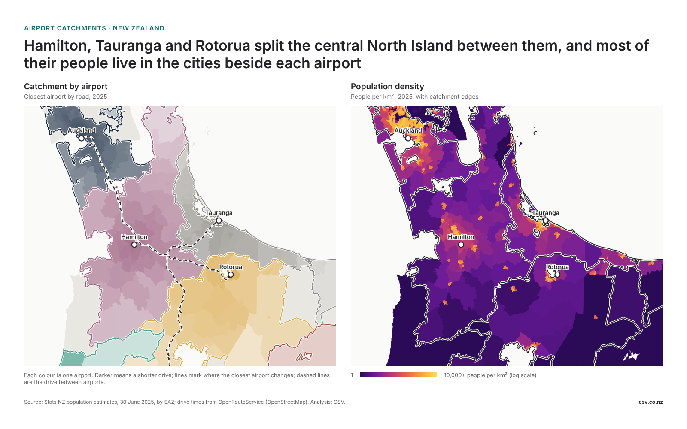
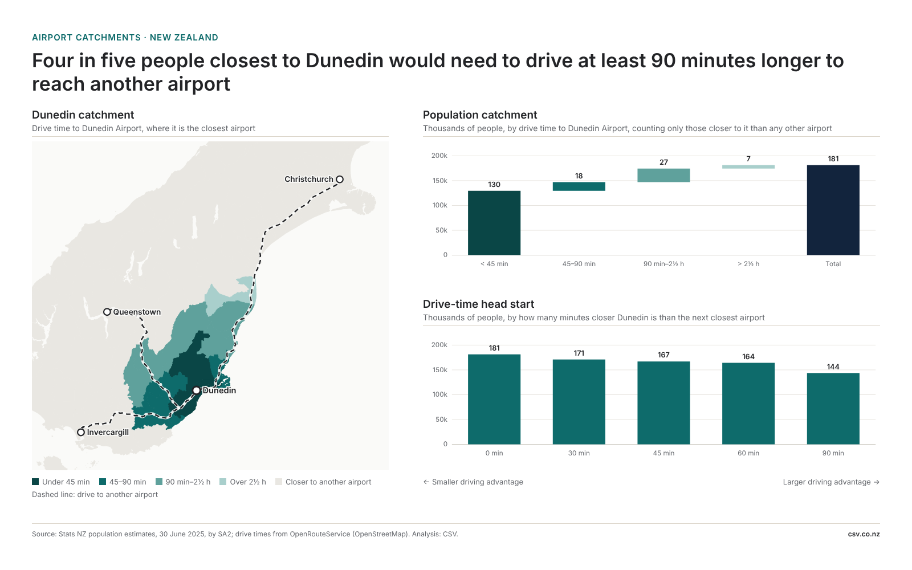
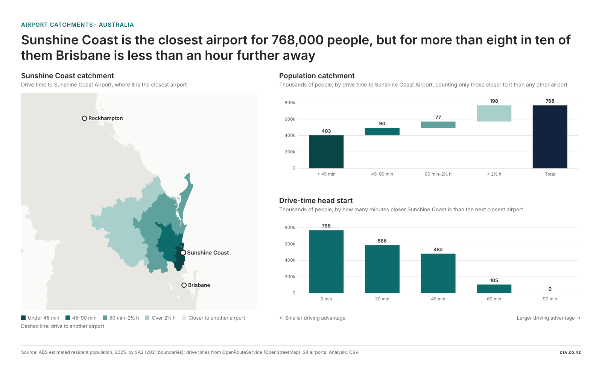
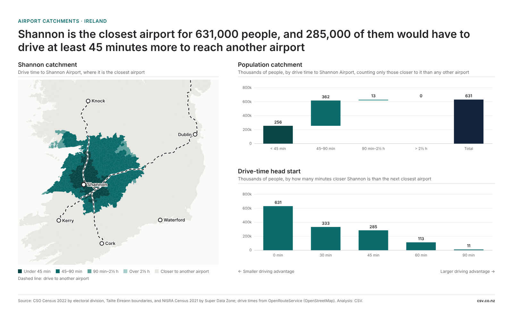

Who calls this their airport?
My local airport handles my short hops. My gateway gets me for long-haul. The middle is a battleground.
Ask how big an airport's catchment is and you'll often get a population figure and a neat line on a map. But the same person might use several airports, depending on the trip.
For a day away, a short drive and the right departure time matter. For a fortnight's holiday, another hour in the car might be worth it for a direct flight or a cheaper fare.
That makes things tricky for a regional airport chasing a new route. How many people already drive past it? Would they switch if it had the right flight? And when does the shorter drive stop making up for three flights a week rather than three a day?
The airline has its own concerns. Opening another airport costs money. It needs to attract passengers from other airlines or encourage more travel, rather than just move its existing passengers onto a different flight.
I've mapped a few examples across New Zealand, Australia and Ireland. For each area, the maps show the closest airport by road and the extra driving time to the next closest. They give us a starting point. Where people actually fly depends on what's on offer.
New Zealand
The central North Island shows how messy the boundaries can be. Hamilton, Tauranga and Rotorua serve neighbouring populations, with Auckland also within reach.


Hamilton is the closest airport for around 410,000 people. But how many would use a new flight? That depends on where it goes, when it leaves and what it costs.
Dunedin is a useful contrast. Four in five of the 181,000 people closest to its airport would need to drive at least 90 minutes longer to reach another. That gives people a much stronger reason to fly locally.


Australia
Newcastle, Sunshine Coast and Canberra all have sizeable populations nearby, within reach of much larger airports.
Newcastle is closest for around 1.3 million people. For roughly two-thirds, though, another airport is less than 90 minutes further away.

At Sunshine Coast, Brisbane is less than an hour further for most.


Canberra has more breathing room: around 674,000 of its 932,000 nearest-airport residents would face at least another 90 minutes in the car to reach the next airport.

These are quite different starting points for an airport trying to persuade people to fly locally.
Ireland
Since moving to Ireland, I've been looking at the same questions here.
Dublin is closest for around 2.6 million people. Belfast adds another twist, with two airports serving the same city. A map can divide the population between them, but the flights will decide which one people use.

Further west, smaller airports share more ground. Shannon is closest for around 631,000 people, but more than half have another airport less than 45 minutes further away.


That's what keeps me interested in catchments. The map tells us who lives closer. The harder question is what would make them choose to fly from there.
New Zealand: Stats NZ estimated resident population at 30 June 2025, by SA2. Australia: ABS estimated resident population 2025, by SA2 (2021 boundaries). Ireland: CSO Census 2022 by electoral division and NISRA Census 2021 by Super Data Zone (Northern Ireland). Drive times: OpenRouteService on OpenStreetMap roads, from each area's centre, routed October 2026 (Ireland November 2026). The comparison includes all airports in each country's dataset: 14 in New Zealand, 24 in Australia and 9 in Ireland. The next closest airport may not offer a useful flight for a particular trip. People without a road route to any included airport are left out. Analysis: CSV. Published: 16 November 2026.